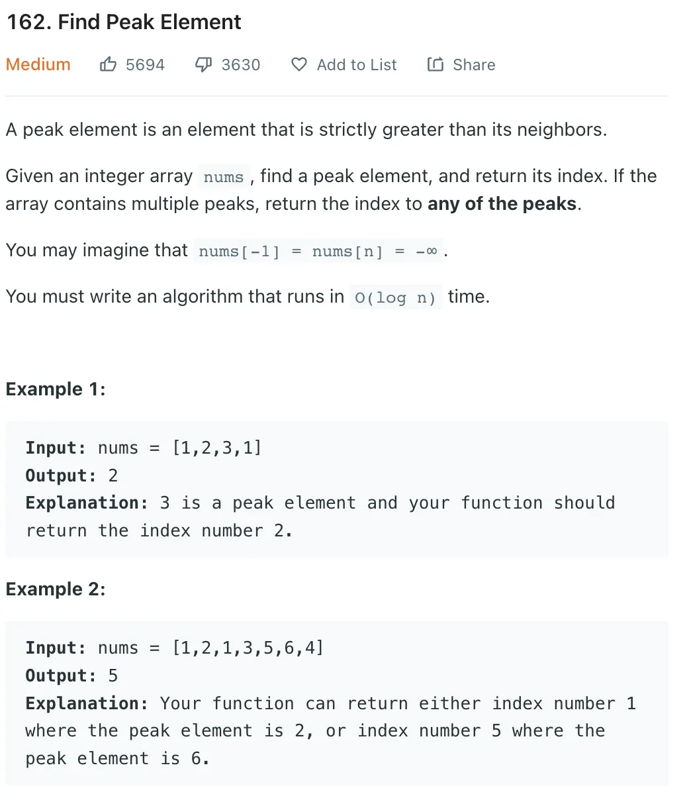
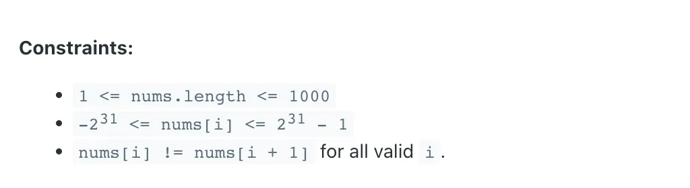

162. Find Peak Element
考過的公司：Bytedance
Question


✍🏽 My Solution
Solution #1 [王爭]
Runtime: 0 ms, faster than 100.00% of Java online submissions for Find Peak Element. Memory Usage: 43.4 MB, less than 19.93% of Java online submissions for Find Peak Element.
class Solution {
public int findPeakElement(int[] nums) {
int n = nums.length;
int low = 0;
int high = n-1;
while (low <= high) {
int mid = low+(high-low)/2;
if (low == high) {
return mid;
}
if (mid == 0) {
if (nums[mid] > nums[mid+1]) {
return mid;
} else {
low = mid + 1;
}
} else if (mid == n-1) {
if (nums[mid] > nums[mid-1]) {
return mid;
} else {
high = mid - 1;
}
} else if (nums[mid] > nums[mid-1] && nums[mid] > nums[mid+1]) {
return mid;
} else if (nums[mid] < nums[mid+1]) {
low = mid + 1;
} else {
high = mid - 1;
}
}
return -1;
}
}
Explanation (in my words)
- How does their solution work?
- 二分峰值查到
- 題意：